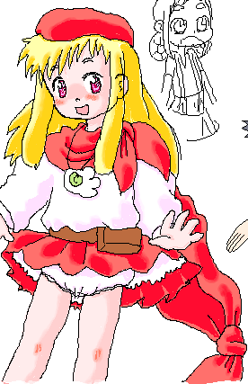

るるな色々絵塗りUPの前に今日タブレットドライバをインストールして
描画範囲設定とかして絵チャで描いたるるな絵を１枚ｖ
右上はモモさんのいつものモモ！ 右にちょっとだけ見える手と髪は
傍観者さんの超美麗な市川小雪たん！(むかしのはづきちゃんのばあや)
絵チャの拡大機能を使ってみたんですが、けっこう自分の思い通りに描けて
自己満足度なかなか。今後のど祭りのTOP絵とかも参加出来そうで
新パソコン移行の為、長いことるるな絵塗り＆WEB更新できない状況が続きましたが
ようやく色々前のパソコンの状況に合わせられたというか
地デジ録画生活も始められて、ちょっとおニューな生活はじまりましたｖ
今日はずっとスカイプの音声通話でだべりながら色々設定して夜更かしさん。
なんか心やすらぐ一晩でしたｖ こんな気持ちが続いたらいいなぁ・・・
09年7月に描いた絵
（更新日 09年7月25日SAT.）
るるな色々絵ｖ
←は町の中でのおでかけ私服？ルック。
←クリックで展開で左下、るるな＆にむにむの
世界では魔法を使うのに"シンボル"の補助を
得ることが多く、この場合のシンボルは指輪です。
一番手軽でメジャー。他首飾りとかもあります。
で、左上と真ん中はるるなは腕力があまり無い
ながら重い剣を使うので、主に身のこなしによる
遠心力を使って剣を振るいます。
右上はあこがれの剣を買うためや生計を立てる
ための狩り姿。
魔法の勉強は苦手ですが色々器用なのですｖ
夜は酒場の看板娘としても働いて、真面目に
道具屋(仮)でアルバイトするにむにむより稼ぎが
多いというｖ けど無駄遣いも多いからどっこいｖ
あとやっぱりぱんつ見えても気にしない子ｖ
09年7月に描いた絵
（更新日 09年7月9日THU.）
看板キャラくんのにむにむ立ち絵ｖ
るるなと同じく魔法学校、旅の基本服
にむにむはるるなと違ってインドア派
大きな夢を持つより実用性、効率優先思考
考えてる服はこれだけです。
今回もコミスタの丸ペン…
ちょっとるるなと比べてイマイチなようなー
今日はノリがそんなに良くなかったからかしら
ポンポン絵を量産出来るようになるかな？と思いましたが
そんなことはなかったかも；
精進します～
08年12月に描いた絵
（更新日 08年12月3日WED.）
看板娘ちゃんのるるな立ち絵～
魔法学校に通ったり旅をするときの基本服
この子は狩りや酒場の手伝い(まんま看板娘ｖ)も
する毎日なのでそういう服装も
後々考えていきたいと思いますｖ
線画はコミスタの丸ペンで描きました。
あとはフォトショでベタ！ベタ！
いつもの鉛筆線じゃ陰塗りまでしないと
人に見せられる絵になりませんが
くっきりした線っていいですねｖ
これからはもうちょい気楽に更新出来るかも？
いい気にならずに頑張ります～
08年11月に描いた絵
（更新日 08年11月29日SAT.）
{kind=link}
{kind=link}
{kind=link}